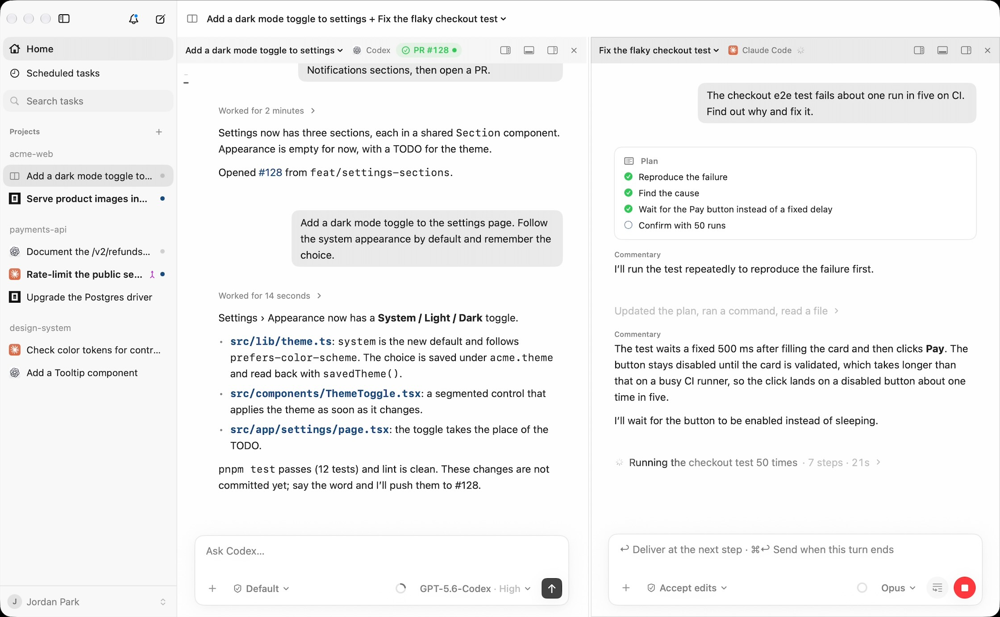
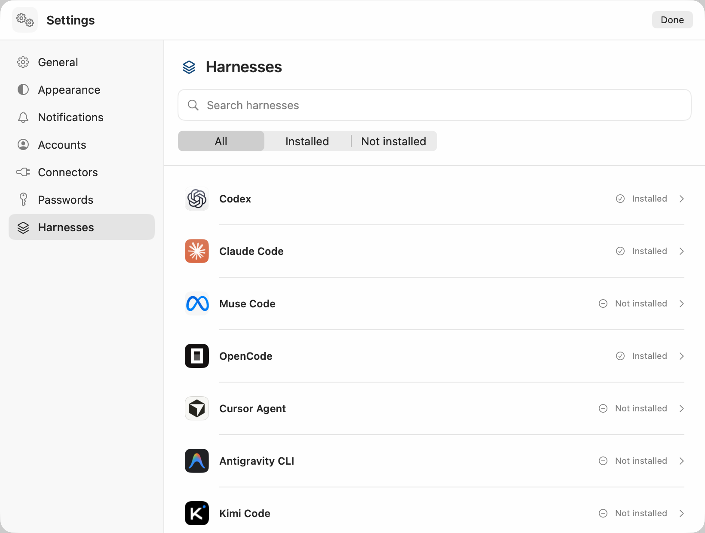

You: I already use Codex and Claude Code. What does Yardlet change?
It runs them side by side, still signed in as you.
Yardlet is a free, open-source Mac app written in Swift, not a web view. It starts the agent
CLIs you already use with the sign-in they already have, and gives all of them the same sidebar,
conversation view, composer and approval cards.

Recorded in Yardlet: Codex works through a dark mode toggle while Claude Code tracks
down a flaky checkout test.Recorded in Yardlet: Codex plans a dark mode
toggle, makes the change and runs the tests.
Install Yardlet on your Mac?
Version 0.11.4 · macOS 15 or later · Apple silicon
Or with Homebrew: brew install --cask zzunkie/tap/yardlet
Yardlet runs each agent from its own CLI and gives all of them one sidebar, conversation view, composer and
approval cards. The controls stay in the same place; the choices and values come from each agent. Install
and sign in to at least one of them first.
Codex
Claude Code
OpenCode
Cursor Agent
Antigravity CLI
Kimi Code
Grok Build
Hermes Agent
Muse Code
Pi

Settings › Harnesses lists each agent Yardlet can start.
What every task comes with
One composer
Type the task, attach files and choose the permission mode in the same place. Each agent still asks before it acts, as it would on its own.
Plans you can follow
When an agent makes a plan, its steps sit beside the conversation and tick off as the work moves.
Model, effort, account
Chosen per task, from the choices that agent offers.
Context and limits
How much of its context a task has used, and how much of each account's session and weekly limits is left.
Product names belong to their owners. Yardlet is not affiliated with or endorsed by them.
You: Have Codex review what Claude Code just wrote.
Your agents hand work to each other.
One task can read another, message it while it works, start a task under itself on any agent and account,
run a one‑off subagent on another agent and get its answer, wait for the results, and put work on a
schedule. Every agent Yardlet starts gets these session tools.
Tools every agent gets from Yardlet
read_task
Read another task's latest turns.
send_message_to_task
Message another task. An idle one starts a turn; a running one reads it without stopping.
create_task
Start a task under this one, with any agent, model and account.
run_agent
Run a subagent on another agent, Codex from Claude Code for instance, and get its final answer.
wait_tasks
Wait until they finish a turn or need you.
create_scheduled_task
Put work on a schedule that runs while Yardlet is open.
Messaging or starting a task in another project asks you first, with an approval card.
You: Tell the deploy task: ship it once the checks pass.
Your approval travels in your own words.
When one agent passes your approval to another, your own words go with it, with the time you sent them.
Yardlet checks that the words are really in your messages in that task and refuses to send if one is
missing, so the receiving agent can tell what you said from what another agent says you said.
What the deploy task reads
The checks passed on #128. Ship it.
Sent by another Yardlet task (task id 5C0A5E00-0000-0000-0000-000000000001); the person did not type it.
Yardlet found these words in the person's own message in task 5C0A5E00-0000-0000-0000-000000000001, sent 2026-10-28T09:12:40+09:00:
> ship it once the checks pass
What an agent gets back if it quotes words you never typed
Not sent: the person's messages in this task do not hold "deploy to production now".
You: Show me what changed, then merge it.
Review it next to the conversation, then merge.
Diffs of the last turn, file restore and fork, a terminal and a files pane sit next to the conversation. The
pull request card follows checks and reviews through your own gh and merges when it is ready.
When checks fail, it shows the log and offers Fix CI.
The review pane goes through the task's changes file by file, beside pull request 128, ready to merge.
You: Start this on whichever account has the most left.
Every account, with its limits in view.
Yardlet shows each account's session and weekly limits, with more than one account per provider. When an
agent starts a task or a subagent, it goes on the account with the most room left, and tasks started
together spread across your accounts. A saved task keeps the account it started on. Each agent runs with
the sign-in its CLI already has; Yardlet doesn't copy it or stand in for it.
You: Sign in to the dashboard and pull this week's numbers.
A browser your agents can drive, with your sign-ins.
Agents drive a Chromium panel beside the conversation with browser tools while you watch. They fill a
sign-in you saved in Yardlet's vault into the page without seeing the password, and only on the site it
belongs to. A step only you can do, like a CAPTCHA or a payment approval, comes to you as a handed-over tab
while the agent waits.
What the agent gets back after filling a saved sign-in
Filled the username and password of “Acme dashboard” into the form on dashboard.acme.dev and submitted it. The values are not shown to you.
Also in the browser
Codes and passkeys
The vault also fills two-step codes and passkeys you saved in it.
Hand it over
The agent hands you the tab with a reason; you finish the step and press I'm done, or decline.
Sign-ins you have
Bring a site's sign-in over from another browser on your Mac, from the page's menu.
Default browser
Make Yardlet your default browser, and links from other apps open in a tab beside the task you are looking at.
You: Draft a reply to Jordan and put the meeting on my calendar.
Set up a connector once, and your agents get it.
A connector you set up once is offered to the agents you run, and can be turned off per task. Gmail, Google
Calendar and Google Drive run through Yardlet's built-in MCP server on your Mac; GitHub, Slack and dozens of
remote MCP services connect with one sign-in. You can find more in MCP registries, or bring in the servers
your other apps already use.
You: Can I answer my agents from my phone?
Answer approvals and start tasks from your phone.
An Android app pairs with your Mac by QR code and follows the tasks running in Yardlet, so you can answer
approvals and start tasks while you are away. On the same network it connects directly; away from it,
through Yardlet's relay. Either way the messages are end-to-end encrypted, and the relay can neither read
nor store them.
The Android app isn't public yet.
You: What do I risk by trying it?
Your agents, sessions and data stay where they are.
Sessions stay with the agent
Codex runs against your normal CODEX_HOME and Claude Code against its own store, so a session
started in Yardlet resumes in the Codex app or in Terminal, and the other way round. Nothing is copied or
moved.
Stop anytime
Yardlet writes nothing into the agents' own configuration; it hands them its tools when it starts them.
Quit it or remove it, and each agent, its sign-in and its sessions are as they were, ready in the
original app or CLI.
Remove Yardlet's own data too
~/.yardletTask list, drafts and reading state
~/Library/Application Support/YardletBrowser profiles and staged updates
Keychain items whose name starts with YardletConnector sign-ins, the phone remote and the password vault, plus Chromium Safe Storage if you don't use Chromium itself
System Settings › Privacy & SecurityYardlet's entries
brew uninstall --zap --cask zzunkie/tap/yardlet removes both folders together
with Yardlet's caches and preferences.
Nothing goes to Yardlet's developer
Yardlet has no analytics and no server that receives your work. Its task list and drafts stay in
~/.yardlet, and its only online services are an update check and, if you pair a phone, a
relay.
What goes where
Your AI providers
What an agent reads, including through a connector, goes to that agent's provider under your account. Training follows that account's settings.
Services you connect
Calls go straight from your Mac to the service. Sign-ins are kept in the macOS Keychain.
yardlet.app
Once a day the update check reads appcast.xml, with Yardlet's and its updater's version numbers and no system profile. Turn it off in Settings › General. Updates download from GitHub Releases.
Yardlet's relay
Only if you pair a phone and it is away from your Mac's network. Its messages are end-to-end encrypted; the relay cannot read them and stores none.
Connecting Google is optional, and you choose which of Gmail, Google Calendar and Google Drive to turn on.
Yardlet's own MCP server runs on your Mac and calls Google's APIs directly, only when an agent uses one of
these tools, and passes the result only to that agent.
What each service allows
Gmail
Search, read, draft, send and label email. No full mail access, so nothing is deleted for good.
Google Calendar
List calendars, read and change events, and check free times.
Google Drive
Read files, and create or change files of its own.
Yardlet does not sell Google data, use it for advertising, or use it to train AI models. The
privacy policy lists each permission it asks for and where the data goes.
Until Google finishes reviewing Yardlet, its sign-in screen shows an “unverified app”
warning. You can also sign in through a Google OAuth app of your own.
You: How do I install it?
Download it, or use Homebrew.
Install Yardlet on your Mac?
Version 0.11.4 · macOS 15 or later · Apple silicon
Or with Homebrew: brew install --cask zzunkie/tap/yardlet